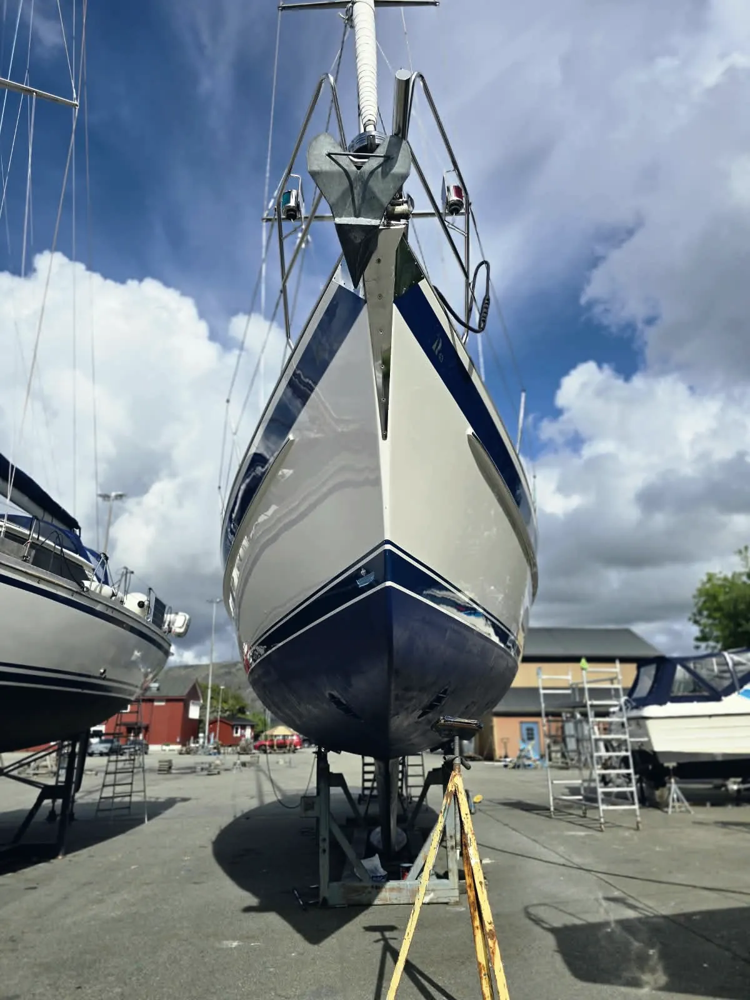
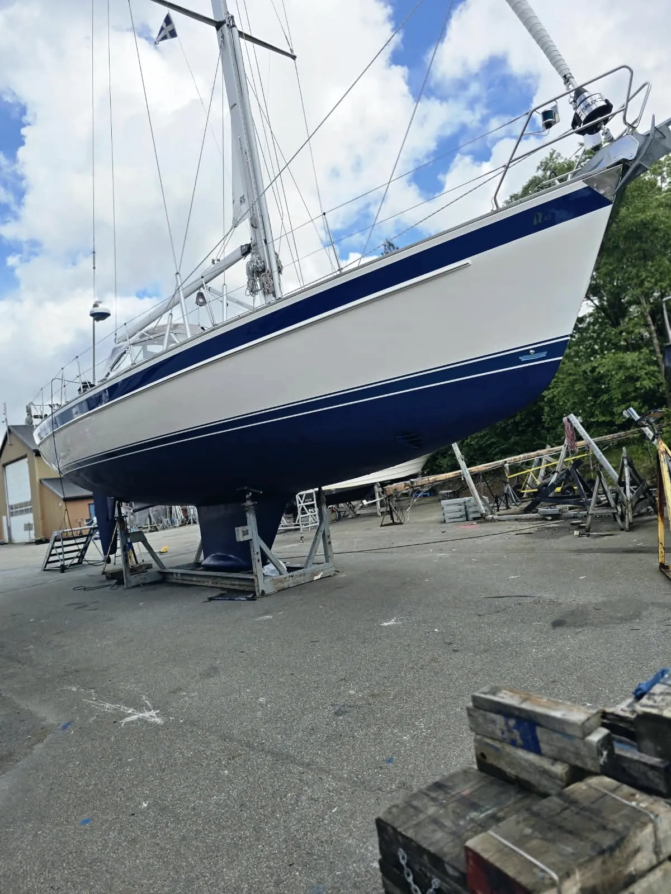
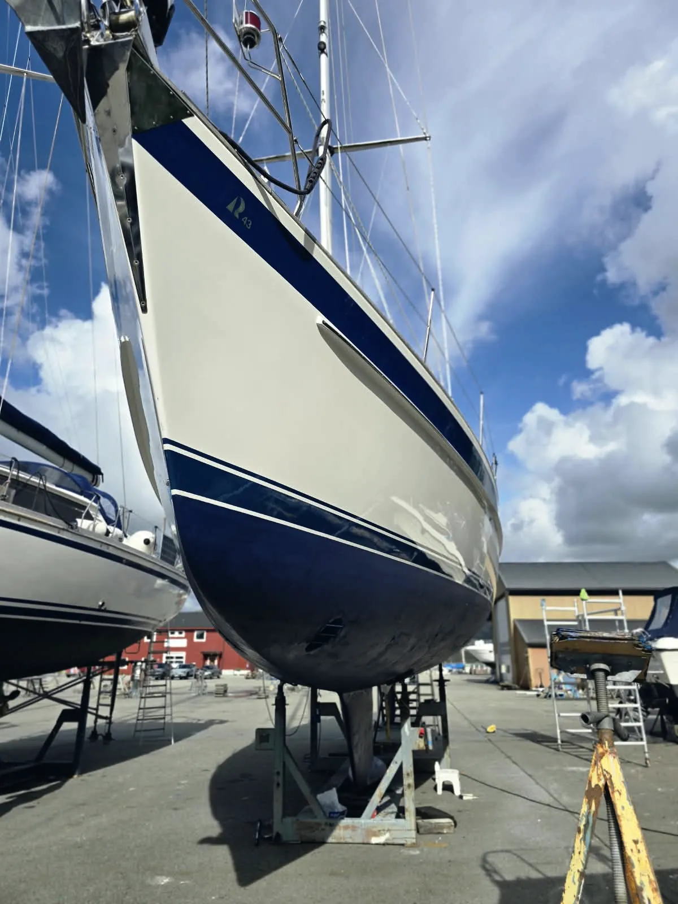
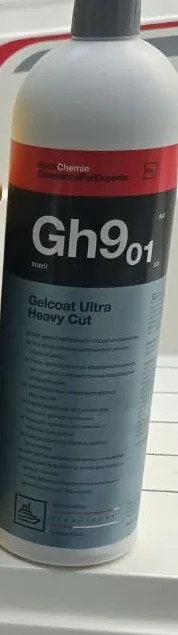
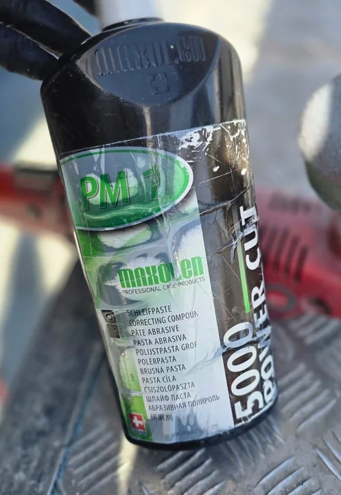
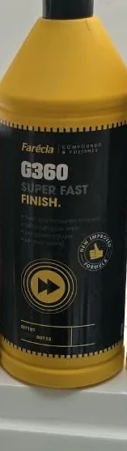
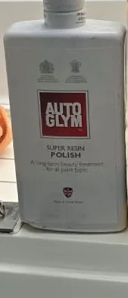
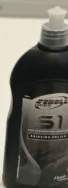
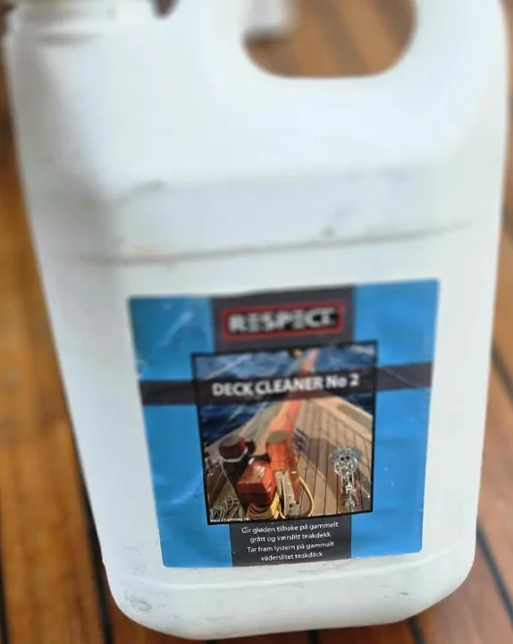

Marine detailing & maintenance · UK & Norway
ARK.NAVICREW
Exceptional care for exceptional vessels, and now for your car too.
or send us a message →- 4 yearsprofessional experience
- UK & Norwayareas we cover
- Boats & carsevery size and type
Every size of vessel
From tenders and RIBs to sailing yachts, motor yachts and superyachts: every service is available for every type of boat.
Our services →Friendly, direct service
Talk to us directly by phone or WhatsApp. We'll look at your vessel and what it needs, and talk you through the options before any work begins.
Get a quote →


Recent work: a full hull polish on a sailing yacht, ready for the season. See the gallery →
Our Services
Whether it's regular washing, annual antifouling and polishing, or getting your boat looking its best for sale, we'll put together the care your vessel needs.
- Boat washing
- Antifouling
- Hull polishing
- Deck polishing
- Marine woodworking
- Wood restoration
- Marine varnishing
- Interior cleaning
- Stainless steel polishing
- Captain services
- Boat buying & selling help
- Something else? Ask us
Boats we work on
Small craft
- Dinghies & tenders
- RIBs & inflatables
- Jet skis / PWC
- Kayaks & paddleboards
Sports & motor
- Speedboats & bowriders
- Sportsboats & ski boats
- Cabin cruisers
- Flybridge & motor yachts
Sail
- Day sailers & keelboats
- Cruising & racing yachts
- Catamarans & trimarans
- Classic & wooden yachts
Large & specialist
- Superyachts
- Narrowboats & widebeams
- Houseboats & river cruisers
- Fishing & work boats
New
Car Valeting
We now offer car valeting, with the same care and attention to detail we give to boats. Every car is different, so prices are discussed when you enquire: just message us with your car and what you'd like done.
- Exterior wash
- Interior valet
- Polish & protection
- Full valet
Gallery
Before and after, and a few of the boats we've looked after. Tap any photo to see it larger.
Before & after
Our work
Videos
Meet the Team

The founder of ARK.NAVICREW brings four years of professional cleaning experience, backed by a long background in boat and car care.
Every job is approached with the same care and attention to detail, whether it's a quick wash, a full valet or a complete yacht detail, for customers across the UK and Norway.
Message directly on WhatsApp →Buy Products
The professional compounds and polishes we use on our own jobs. There's no online checkout: tap "Ask about this" and we'll confirm availability and the price on WhatsApp.
-

Koch-Chemie Gh9.01Gelcoat Ultra Heavy Cut
Heavy-cut compound for bringing back dull, oxidised gelcoat.
Ask for price
Ask about this -

Maxolen PM1Power Cut 5000
Correcting compound for removing scratches and swirl marks.
Ask for price
Ask about this -

Farécla G360Super Fast Finish
Finishing compound for a deep, high-gloss shine.
Ask for price
Ask about this -

AutoglymSuper Resin Polish
Long-lasting polish for boat and car paintwork.
Ask for price
Ask about this -

Scholl Concepts S1Grinding Polish
High-performance cutting polish for correcting heavier defects.
Ask for price
Ask about this -

RespectDeck Cleaner No 2
Brings the colour back to grey, weathered teak decks.
Ask for price
Ask about this
Product names and brands belong to their respective owners.
Contact us
Call, message or email us, or fill in the form and we'll get back to you.